Classical Physics refers to the body of physics developed before the rise of quantum mechanics and relativity. It provides the foundational laws that describe the motion of objects, forces, energy, waves, fluids, heat, and electricity at everyday scales — where objects move much slower than the speed of light and are much larger than atoms.
Classical physics assumes that physical quantities such as position, velocity, and time are continuous and can be measured with arbitrary precision. It is extremely accurate for describing the macroscopic world and forms the basis of engineering, mechanics, and traditional scientific analysis.
While extremely powerful, classical physics fails in two major domains:
Despite these limitations, classical physics remains the backbone of engineering, mechanics, structural analysis, civil engineering, and most real-world applications where velocities are low and objects are large.
Determine the velocity and acceleration if the displacement as a function of time is $s=3t^2+4$


See images:
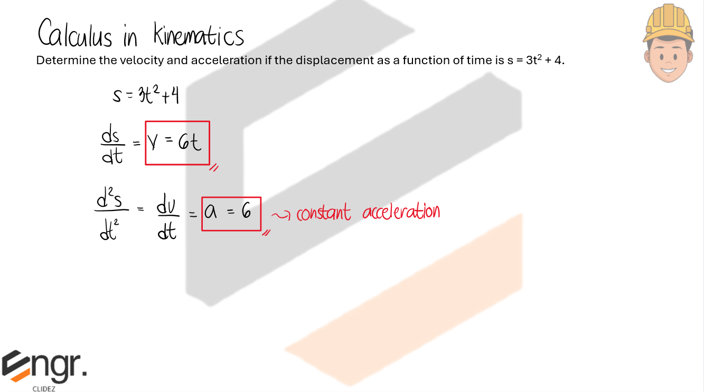


The acceleration of a particle is given by $a=4-6t$. The velocity is 2m/s when t=1s and the initial displacement is 6m.

A particle is moving along a straight line with the acceleration $a=(12t-3t^{1/2})ft/s^2$, where t is in seconds. Determine the velocity and the position of the particle as a function of time. When t=0, v=0 and s=15ft.

The acceleration of a particle travelling along a straight line is $a=k/v$, where $k$ is a constant. If $s=0\text{, }v=v_0\text{, when }t=0$, determine the velocity of the particle as a function of time.
A particle travels along a straight line with a velocity $v = (12 – 3t^2)m/s$, where t is in seconds. When t = 1s, the particle is located 10m to the left of the origin. Determine the acceleration when t = 4s and identify whether the body is decelerating or accelerating. Also determine the displacement from t = 0 to t = 10s, and the distance the particle travels during this time period. After which, calculate the average speed and average velocity.
A car starting from rest is moving at constant acceleration until it reaches a final velocity of 19m/s after travelling a distance of 153.2m. Calculate the acceleration and the required time.

A jumbo jet needs to reach a speed of 360km/h on the runway for takeoff. Assuming a constant acceleration and a runway 1.8km long, what minimum acceleration from rest is required? Express your answer in m/s2.
A sprinter in the 100-m dash accelerates from rest to a top speed at 2.8m/s2 and maintains the top speed to the end of the dash. a) What time elapsed and b) what distance did the sprinter cover during the acceleration phase if the total time taken in the dash was 12.2 seconds?
An auto A is moving at 20fps and accelerating at 5fps2 to overtake an auto B which is 384ft ahead. If auto B is moving at 60fps and decelerating at 3fps2, how soon will A pass B?
A motorcycle is stopped by the side of the road when a car passes at 50mi/h. Twenty seconds later, the motorcycle starts chasing the car. Assume that the motorcycle accelerates at 8ft/s2 until it reaches 60mi/h and then travels at a constant speed. Find the amount of time it will take for the motorcycle to overtake the car and the total distance traveled by the motorcycle in that time.
In travelling a distance of 3km between points A and D, a car is driven at 100km/h from A to B for t seconds and at 60km/h from C to D also for t seconds. If the brakes are applied for four seconds between B and C to give the car a uniform deceleration, calculate t and the distance s between A and B, in seconds and kilometers, respectively.
In projectile motion without air resistance, two launch angles that add up to 90° (called complementary angles) will produce the same horizontal range when launched with the same initial speed.
The range of a projectile is given by:
Because the sine function satisfies:
the range for angles such as 30° and 60° will be identical. These are called range pairs.
Although complementary angles give the same range, they do not have the same:
A smaller angle (e.g., 30°) produces a lower, flatter path with a smaller height, while a larger angle (e.g., 60°) produces a higher trajectory with a greater maximum height.
Thus, complementary angles give the same range, but not the same height or time of flight.
An arrow is shot towards a wall 50m away with an initial velocity that makes an angle of 45° with the horizontal. It strikes the wall 35m above the ground. Assuming the arrow was released from ground level, find the initial velocity of the arrow.

A projectile is fired with a muzzle velocity of 300m/s from a gun aimed upward at an angle of 20° with the horizontal, from the top of a building 30m. high above a level ground. With what velocity will it hit the ground, in m/s?
A bullet shoots at 460 m/s at a target 130 m away. If the center of the target is level with the rifle, how high above the target must the rifle barrel be pointed so that the bullet hits dead center?
What is the maximum height achieved by the bullet?
50m from the edge of a cliff, a projectile is thrown at an angle of 30° with the horizontal. At what horizontal distance beyond the cliff does the ball strike the water if it just barely misses the edge of the cliff? The height of the cliff 62m.
A small plane, flying at 180km/h at an altitude of 240m, is to drop an inflatable raft to flood victims stranded on a flat roof. How far from the roof should the pilot release the package so that it will land on the roof?
A ball is thrown so that it just clears a 25-ft wall 100ft. away. If it left the hand 5 feet above the ground an at an angle of 60° to the horizontal, what was the initial velocity of the ball?
A projectile with a muzzle velocity of 550m/s is fired from a gun on top of a cliff 460m above the sea level. If the projectile hits the ocean surface 49.2 seconds after being fired, determine
(a) the angle of elevation of the gun,
(b) the range, and
(c) the highest point attained above the cliff.
A catapult is placed 100 ft from the castle wall, which is 35 feet high. The soldier wants the burning bale of hay to clear the top of the wall and land 50 feet inside the castle wall. If the initial velocity of the bale is 70 feet per second, at what angle should the bale of hay be launched so that it travel 150 feet and pass over the castle wall. Use $g = 32 ft/sec^2$.
The two bodies A and B are supported by a system of light cords and pulleys, which are frictionless and of negligible weight. Block A is 290N and B is 880N. Calculate the acceleration of each block after release and the tension in the main cord.
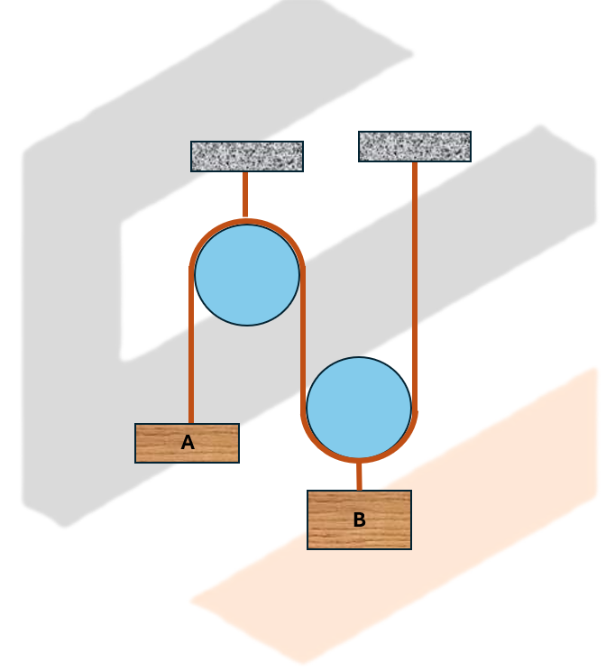

See images:
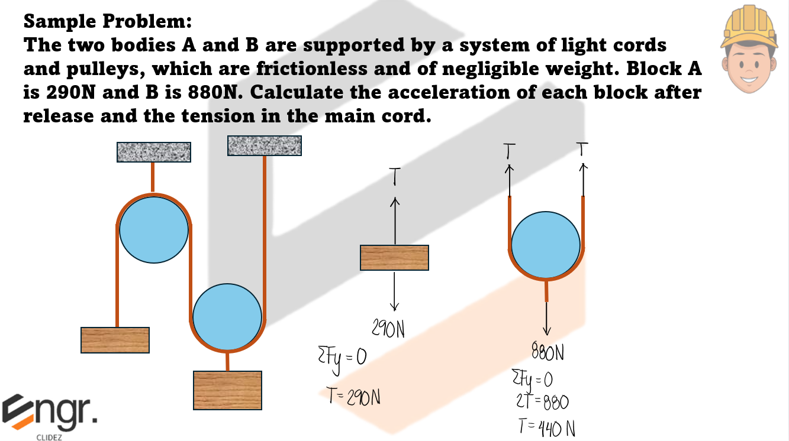 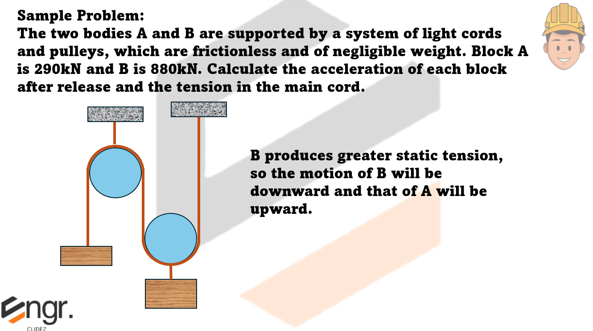 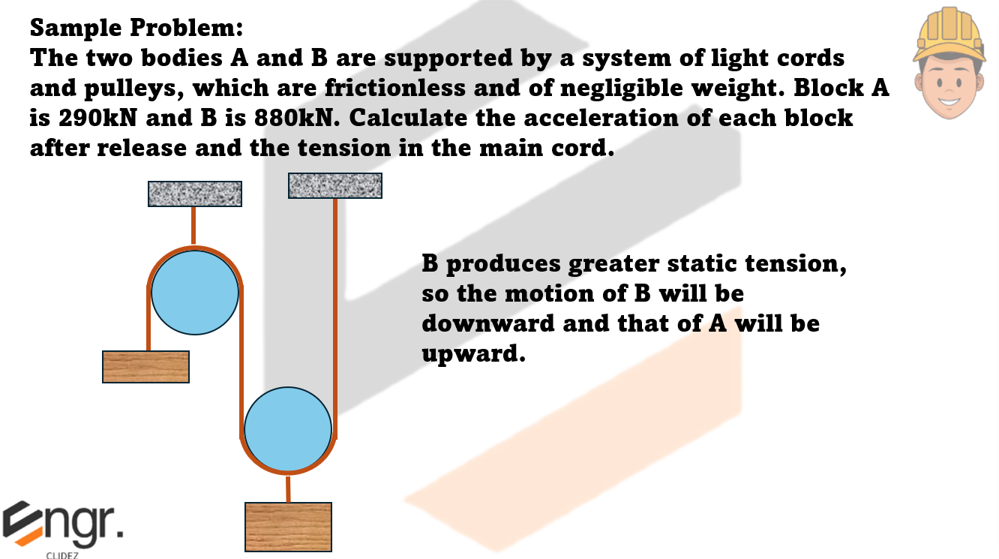 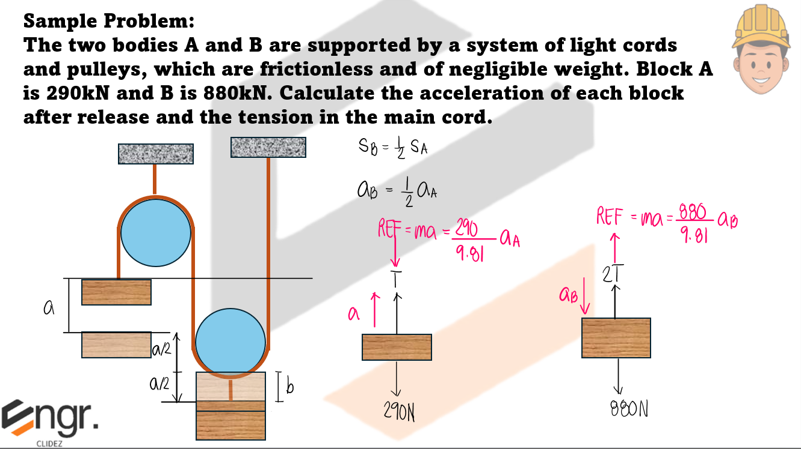 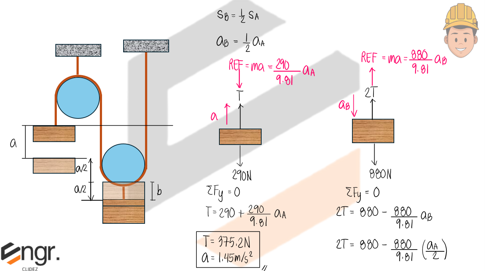A 3kg block is acted on by a 25N force that acts 37º from the horizontal. The kinetic coefficient of friction is 0.2. What is the acceleration of the block?
A 100-kg block of ice is released at the top of a 30º incline 10m above the ground. If the slight melting of the ice renders the surface frictionless, calculate the velocity of the block at the foot of the incline.
A 5-kg block has a rope of mass 2kg attached to its underside and a 3-kg block is suspended from the other end of the rope. The whole system is accelerated upward at 2m/s2 by an external force F.
Determine:
a) The force F;
b) The net force in the rope;
c) The tension at the middle of the rope
A woman stands on a scale while riding in an elevator. When the elevator is at rest, the scale reads 125lbs. What will be the reading of the scale when the elevator accelerates?
a. upward at 4ft/s2
b. downward at 4ft/s2
A light rope connects two blocks with mass 3kg and 5kg and slide on a frictionless surface as shown. A force F=10N acts on m2 at 20º to the horizontal. Find the acceleration of the system and the tension in the rope.
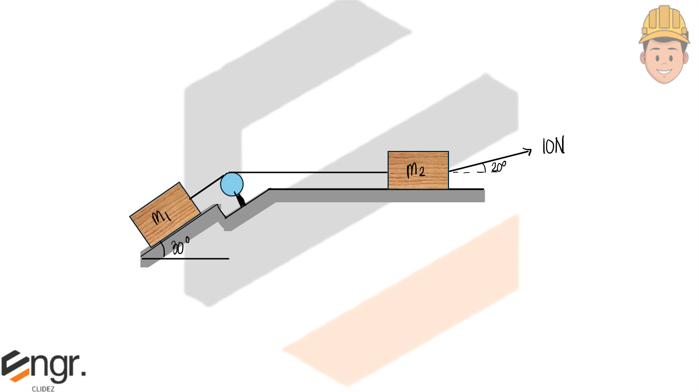 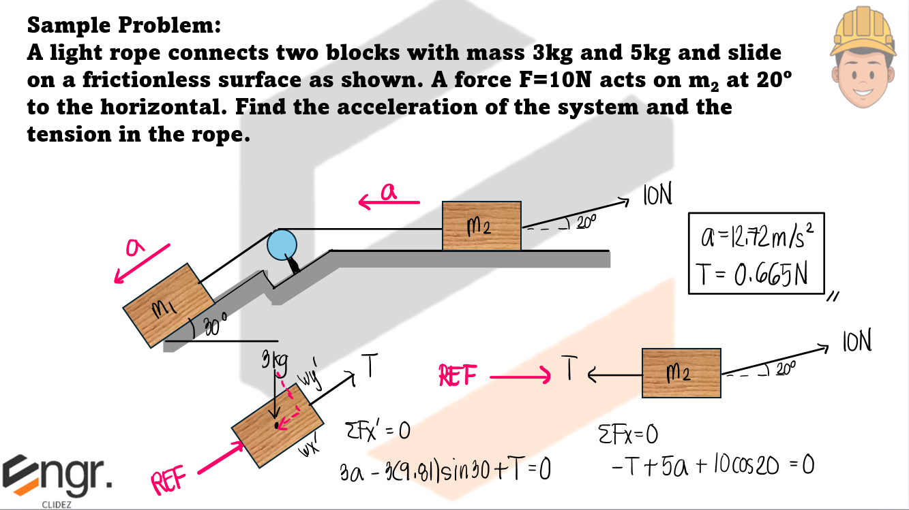
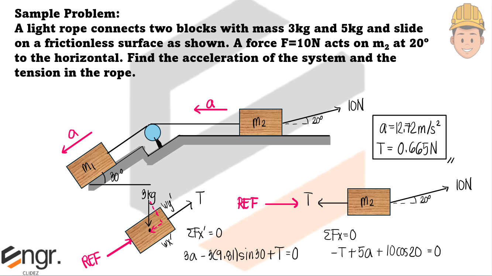Two bodies A and B shown at the right, weighing 400lb and 300lb, respectively, are connected by a rigid bar 10ft. long and of negligible weight and move along the smooth surfaces shown. If the start from rest at the given position, determine the acceleration of B at this instant.
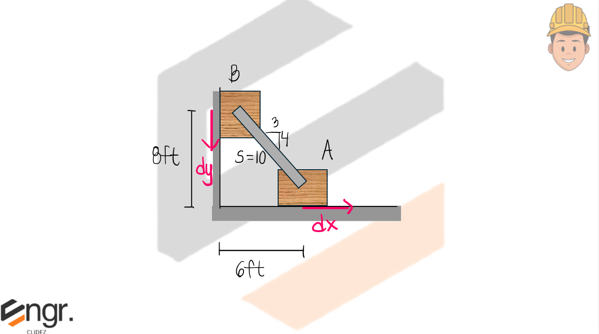1. The work done by a force is the product of the magnitude of the force and the displacement it makes in the direction of the force.
Where:
W → work done on a body (N·m)
F → force
d → displacement
2. Only forces in the direction of motion do work.
3. Forces that cause the motion do positive work.
4. Forces that retard the motion (e.g., friction) do negative work.
5. Energy is the capacity to do work.
6. Potential Energy is the energy of a body due to its position above a datum line.
7. Kinetic Energy is the capability of the body to do work due to its velocity.
The change in kinetic energy is equal to the positive work minus the negative work.
A 16-lb crate slides down a ramp as shown. If the crate is released from rest 10ft. agove the bottom of the ramp and the coefficient of friction between the crate and the ramp is 0.2, determine the speed of the crate when it reaches the bottom of the ramp.
The biker starts from rest at A and travels down the ramp. If friction and air resistance can be neglected, determine the biker's speed vB when he reaches B. Also compute the distance, d, to where he strikes the ground at C if he makes the jump travelling horizontally at B. Neglect the biker's size. He has a mass of 70kg.
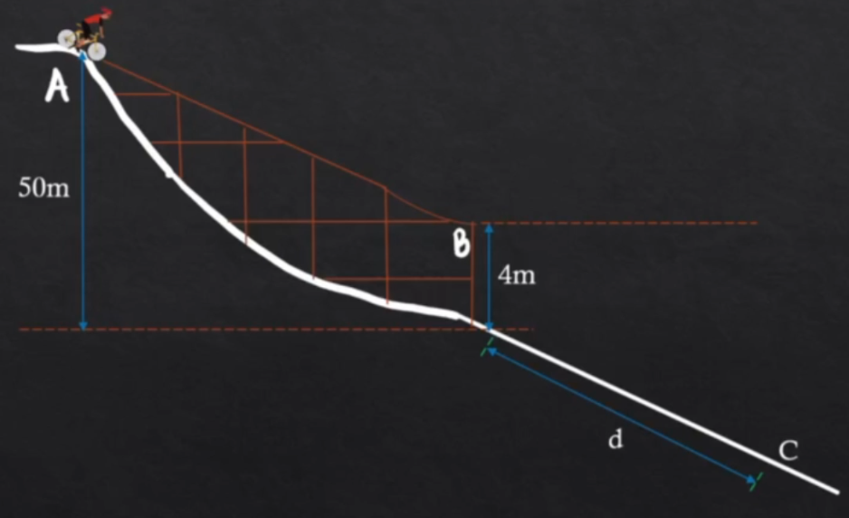Where:
I → impulse (N·s)
F → force (N)
t → time in seconds
5. The unit of momentum derived from mass and velocity is kg·m/s.
If two bodies collide, then the sum of the momenta before collision is equal to the sum of the momenta after collision.
Where:
m1 → mass of the first body
m2 → mass of the second body
v1 → velocity of the first body before collision
v2 → velocity of the second body before collision
v1' → velocity of the first body after collision
v2' → velocity of the second body after collision
Initial momentum + Positive Impulse − Negative Impulse = Final momentum
The relative velocity of two bodies before collision is v1 − v2 and the relative velocity after collision is v1′ − v2′.
The coefficient of restitution (e) is the ratio of the relative velocity after impact to that before impact.
A tensile force of 50N inclined 30° from the horizontal is applied on a 200N block which is at rest.
a. Determine the coefficient of friction between the block and the horizontal plane if after it moves a distance of 40 meters, its velocity is 10m/s.
b. Compute the distance (meters) traveled by the block at the end of 20 seconds.
The 2-kg sphere is released from rest and swings down, striking the 5-kg box B. The distance from the ceiling to the center of the sphere is 1 meter. The coefficient of restitution for the collision is 0.70 and the coefficient of friction between the box and the floor is 0.10. If the box slides 750mm after the impact before it comes to rest again,
a. Determine the velocity (in m/s) of the box immediately after the impact.
b. Determine the angle 𝜙 at which the sphere A was released.
 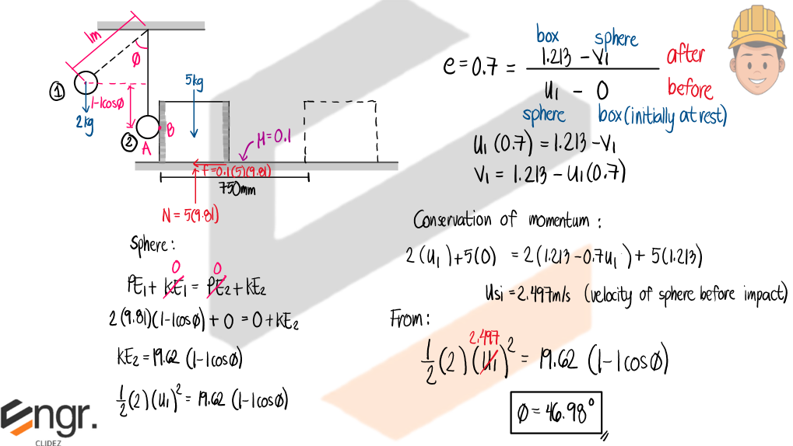
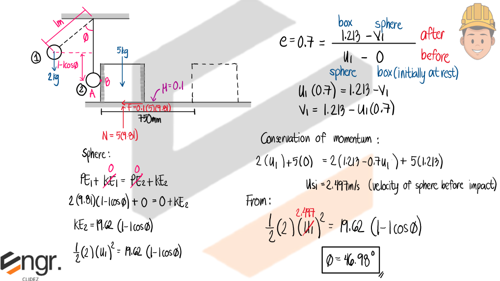

Curvilinear motion refers to the motion of a particle along a curved path. At any point on the path, the motion can be described using tangential and normal components, involving angular speed, angular displacement, and centripetal acceleration.
The following are the fundamental formulas used to describe circular and curvilinear motion.
Frequency is measured in Hz (Hertz), where 1 Hz = 1 cycle per second.
A bob of weight W is moving with a constant velocity of 2.4m/s and is suspended on a 0.6m string. If the weight of the bob is 450N, compute the required inclination, θ, Tension T in the string, and the time required for one complete revolution.
The position of a particle is given by:
where $t$ is in seconds. Determine the magnitude of the velocity and the magnitude of the acceleration when $t = 2$ s.
1. Velocity Vector (first derivatives)
x-component:
y-component:
z-component:
Magnitude of velocity:
2. Acceleration Vector (second derivatives)
x-component:
y-component:
z-component:
Magnitude of acceleration:
Final Answers:

Problem:
The velocity of a particle is
If $\mathbf{r} = 0$ when $t = 0$, determine the displacement of the particle during the time interval from $t = 1\;\text{s}$ to $t = 3\;\text{s}$.
1. Integrate the velocity to obtain position.
Integrate components:
2. Evaluate position at the limits.
At $t = 1$:
At $t = 3$:
3. Displacement from $t = 1$ to $t = 3$:
Final Answer: The displacement is $6\mathbf{i} + 4\mathbf{j}\;\text{m}$.
A particle travels along the parabolic path
If its component of velocity along the y-axis is
determine the x- and y-components of the particle's acceleration. Here, b and c are constants.
1. Integrate $v_y$ to obtain $y(t)$.
2. Use the path relation $ y = b x^2 $ to solve for $ x(t) $.
3. Compute the velocity component $v_x = dx/dt$.
4. Compute the x-component of acceleration $a_x = dv_x/dt$.
5. Compute the y-component of acceleration.
Final Answers:
The velocity of a particle is given by $$ \mathbf{v} = \{ 16 t^2 \} \mathbf{i} + \{ 4 t^3 \} \mathbf{j} + \{ 5t + 2 \} \mathbf{k} \ \text{m/s}, $$ where $t$ is in seconds. If the particle is at the origin when $t = 0$, determine the magnitude of the particle's acceleration when $t = 2$ s. Also, find the $x$, $y$, and $z$ coordinate position of the particle at this instant.
Step 1: Compute acceleration by differentiating velocity.
At $t = 2$:
Acceleration magnitude:
Step 2: Integrate velocity components to get position.
Evaluate at $t = 2$:
Final coordinate position:
A particle travels along the circular path $ x^2 + y^2 = r^2. $ If the y-component of the particle's velocity is $ v_y = 2r \cos 2t, $ determine the $x$ and $y$ components of its acceleration at any instant.
1. Integrate $v_y$ to obtain $y(t)$.
2. Use the circular path equation to find $x(t)$.
3. Compute $v_x$.
4. Compute the acceleration components.
Final Answers:
The box slides down the slope described by the equation $$ y = 0.05 x^2 $$ where $x$ is in meters. If the box has $x$ components of velocity and acceleration of $v_x = -3 \, \text{m/s}$ and $a_x = -1.5 \, \text{m/s}^2$ at $x = 5$ m, determine the $y$ components of the velocity and acceleration of the box at this instant.
1. Differentiate $y = 0.05 x^2$ with respect to time to find $v_y$.
At $x = 5$ and $v_x = -3$:
2. Differentiate $v_y$ to get $a_y$.
Since $v_y = 0.1 x v_x$, use the product rule:
Evaluate at $x = 5$, $v_x = -3$, $a_x = -1.5$:
Final Answers:
The van travels over the hill described by $y=[-1.5x10^{-3}x^2+15]ft$. If it has a constant speed of 75ft/s, determine the x and y components of the van's velocity and acceleration when x=50ft.

A 60kg drum shown has a radius of gyration of 0.25m. A cord of negligible mass is wrapped around the periphery of the drum and attached to the block having a mass of 20kg. How long will the block reach a distance of 4 meters starting from rest, if the velocity is given by $v={8s^2-2s)m/s$, where is is in meters?
A stone is thrown with an initial velocity of 100ft per second upward at 60° to the horizontal. Compute the radius of curvature of its path at the point where it is 50ft horizontally from its initial position.


A stone is thrown with an initial velocity of 100ft per second with the horizontal. Compute the radius of curvature of its path at the point where it is 50ft horizontally from its initial position.